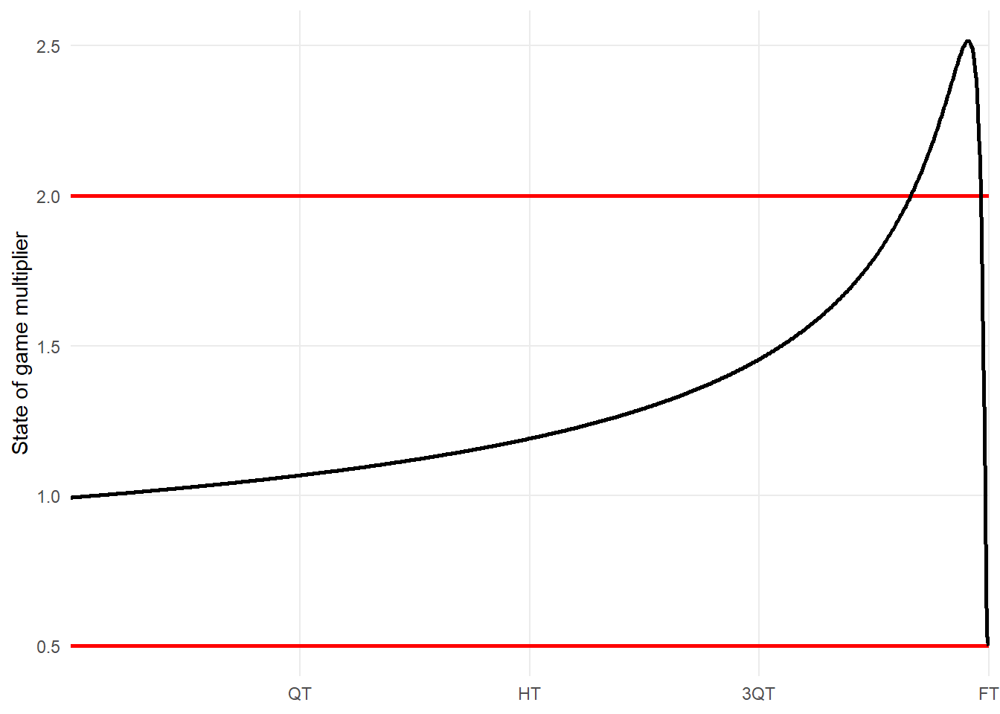
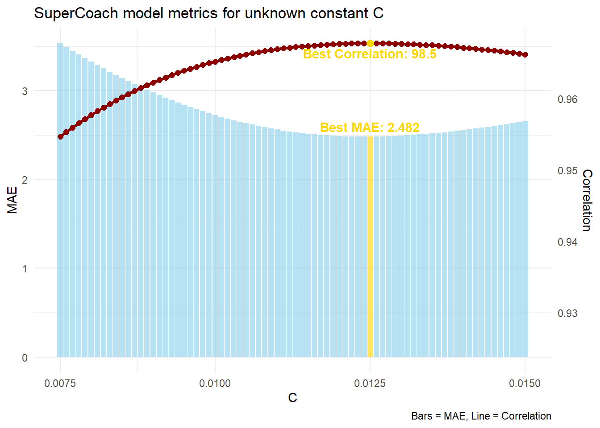
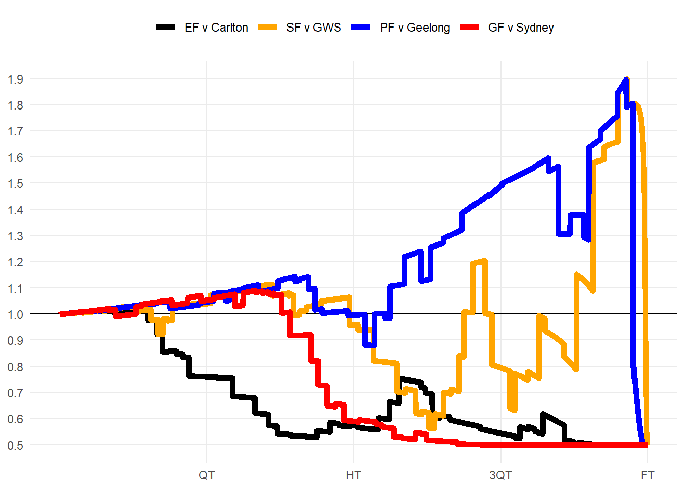

The secrets of SuperCoach scaling
01/07/2025
The scoring system for SuperCoach is incredibly complex. It uses Champion Data’s Ranking Points, a combination of secret formulas and weightings with a lack of information about how it works. The community takes this competition very seriously, so each weekend we see many complaints about player scores and the reasons behind the numbers. The true information would be really nice to have, and I made a good start last year.
In my 2024 article researching SuperCoach scoring, I used a model to find the most “average” value players get rewarded for each action (kick, goal, spoil…). While it was a breakthrough in the community, especially for the data I was able to unlock, it was missing one key element - the state of game multiplier. This capped my accuracy at 96.8% in which I was off by 4.23 points on average.
In this article, I will be attempting to solve the in-match scaling system that is used for SuperCoach.
What do we know about this “state of game” multiplier?
SuperCoach scores are weighted based on how close the game is - more reward comes from a match-winning goal than a junktime goal. Unfortunately, there isn’t much on Twitter/X about how this state-of-game multipler works. So I’ve had to dig into the archives - finding a Big Footy thread with contributions by the Champion_Data account. When questioned on whether the in-match scaling system is purely made-up to suit their own players, they responded:
The same formula is applied to every stat across the entire game, not just the final stages. The weight applied to stats is dependent on margin at the time the stat is called and how long there is left… It is a formula that is calculated live. The inputs to the formula are the time left in the game and the current margin.
Sounds like what we have come to know about the system. And it’s also great to know that the formula works for all parts of the game, so we are solving for one equation. This lines up with what accounts like @FantasyFreako have described, and also matches what we’ve heard on the Official Supercoach AFL Podcast. However, the Big Footy thread has a much better description than we’ve ever had before…
The exact formula for the weights is considered commercial IP, but it is along the lines of: (1+PDF(Current Margin)/C)/2 where C is a constant and PDF is the normal PDF with a mean of zero and a standard deviation proportional to the percentage of game time left at the time the stat happened.
This is great information for us - it unlocks the form of the mathematical equation we are searching for. Let’s use the formula for a normal distribution, use a mean \(\mu\) of zero, and add in the coefficients outlined in the quote (including an unknown constant \(C\)). Champion Data also say that the standard deviation \(\sigma\) is proportional to the percentage of game time left, meaning that the margin must be the independent variable.
\(f(\text{margin},\sigma) = \frac{1}{2}\left(1 + \frac{1}{C\sqrt{2\pi\sigma^2}} \exp\left( -\frac{\text{margin}^2}{2\sigma^2} \right)\right)\)
Time for the maths…
Let’s assume Champion Data defined the standard deviation based on how much variance (\(\sigma = \sqrt{Variance}\)) in margin is expected after \(t\%\) of the match has elapsed. This gives us a \(\sqrt{1-t}\) form which has nice limits of starting at 1 and decreasing towards 0. Let’s add another coefficient \(a\) to re-scale the output, otherwise the variability in margin never exceeds 1 point - but we know large comebacks can happen!
\(\sigma = a\sqrt{1-t}\\\implies f(\text{margin},t) = \frac{1}{2}\left(1 + \frac{1}{aC\sqrt{2\pi(1-t)}} \exp\left( -\frac{\text{margin}^2}{2a^2(1-t)} \right)\right)\)
We now have two unknown constants \(a\) and \(C\) which isn’t ideal. I really want to eliminate one, and we can do so using a known value. If this distribution is centred around 1, it would mean that at the very start of the game (\(\text{margin}=0, t=0\)), the output multiplier would be 1.
\(f(0,0) = 1\\\implies \frac{1}{2}\left(1 + \frac{1}{aC\sqrt{2\pi(1-0)}} {\exp\left( -\frac{0^2}{2a^2(1-0)}\right)}\right) = 1\\\implies 1 + \frac{1}{aC\sqrt{2\pi}} = 2\\\implies a = \frac{1}{C\sqrt{2\pi}}\)
This helps out a lot, but we are still stuck with our constant \(C\). At this point I was going to brute force it to try and figure it out, but luckily Champion_Data on Big Footy had one more piece of info to share:
C is a constant, which means it’s a set number that re-scales the result. It is a number close to 0.01.
Very handy info! This minimises the range I’ll use to calibrate using real SuperCoach scores later. This also means that \(a\) is somewhere between 32 and 53 points. Sounds about right for the biggest comebacks. For now, let’s use \(C=0.01\) to learn more about the formula.
Managing extreme scaling
As margin\(\rightarrow\infty\), the exponential approaches 0 meaning we end with a lower bound of \(0.5\). This means all actions in SuperCoach get at least half their base value even in blowouts.
According to Karl Jackson’s thesis on creating the AFL Player Ratings system, the state of game multiplier “can result in plays that change the outcome of a match in the dying seconds potentially having four times as much value as events towards the end of a match where the result is beyond doubt”.
This means that we are looking at a state of game multiplier that ranges between 0.5 and 2.0. Half and double - quite nice when you think about it.
However, when we plot a graph of a game where teams are always separated by 1 goal (margin\(=6\)), we reveal we aren’t keeping inside those boundaries.
The easiest thing to do here would be to use a hard cap such that all values above 2 are reduced to 2. But even that wouldn’t be enough as according to Champion Data on Twitter, as two match winning goals by Dangerfield & Roughead in Round 10 2017 didn’t even get a state-of-game multiplier of 2.
Multipliers for state of game (margin & time left):
— Champion Data AFL (@ChampionDataAFL) May 28, 2017
Dangerfield: 1.95
Roughead: 1.96
3300 Point multiplier:
Danger: 0.62
Rough: 0.60
So instead of a hard cap, let’s try an exponential decay to softly approach the 2.0x multiplier. We can create a piecewise function where it uses the original formula for \(1\pm0.5\), and only introduce the exponential slowly approaching 2.
\(f_{adj} =\begin{cases}2 - \frac{1}{2} \cdot \exp(1.5 - f), & \text{if } f > 1.5 \\f, & \text{if } f \leq 1.5\end{cases}\)

Solving the equation
Okay, time to simulate! Let’s use our best guesses from what we learnt last time, and add in the in-match scaling formula with potential \(C\) values.

And there we have it! The optimal value is \(C = 0.0125\). This rounds nicely to \(C=\frac{1}{80}\), and also means that \(a = 32\). Let’s put the equation back into the form that the Champion_Data account provided on Big Footy.
\[ \textstyle f(\text{margin},t) = \frac{1}{2}\left(1 + \frac{80}{32\sqrt{2\pi(1-t)}} \exp\left( -\frac{1}{2}\left(\frac{\text{margin}}{32\sqrt{1-t}}\right)^2\right)\right) \]
\[ \textstyle f_{adj} = \begin{cases} 2 - \frac{1}{2} \cdot \exp(1.5 - f), & \text{if } f > 1.5 \\ f, & \text{if } f \leq 1.5 \end{cases} \]
Putting it to the test
Brisbane’s finals series to win the 2024 premiership had both blowouts and thrillers that went down to the wire. How were actions weighted here?
It was 60-0 halfway through the second quarter against Carlton. The Blues kicked 5 unanswered goals, but a dry end to the third quarter put the state-of-game back down to 0.5 as time ran out.
The Lions were down by 46pts against the Giants halfway through Q3. Crucial Q4 goals to Zorko & Fletcher doubled the scaling factor from 0.8 to 1.6. Daniher finished the game with a 31pt play: contested mark (10.1), kick (6.8) and match-winning goal (13.6).
The prelim was tight all game. The scaling was more time-dependent, moving from 1.2 to 1.6 during the goalless 18 minutes surrounding 3QT. Rayner’s iconic goal put the margin to 11pts sent the multiplier from 1.8 down to 0.8 in one kick.
The Grand Final started tight, but the Lions heaped on 11 goals to 1, putting the result beyond doubt early. The entire last quarter had a 0.5 state-of-game multiplier, so the 3300 rule had to prop up the first quarter contributions. Q2 goals to Lohmann and Daniher were a match high 10pts each and started off the huge flurry of goals.

You can test this formula out below to get a feel for the values it outputs at different margins & time left.
0
Q1 20:00
What a great success. After some stat cleaning, my model now has accuracy of \(R^2 = 0.9920\) and has an average error of \(2.049\). This new development has better-than-halved my error! The rest of the error comes from a variety of areas I will try to address: data cleaning errors, zone multipliers, and the fact I don’t have sources for time-coded 50m penalties or behind assists.
Stay tuned for Part 3 of this series, where I will create a full breakdown using this new formula. We’ll discuss how strong the 3300 rule is, which players benefit the most from this state-of-game multiplier, and how we can apply it to our SuperCoach teams. Make sure you’re following me on Twitter as it will come out very soon!
Stats By Jaiden